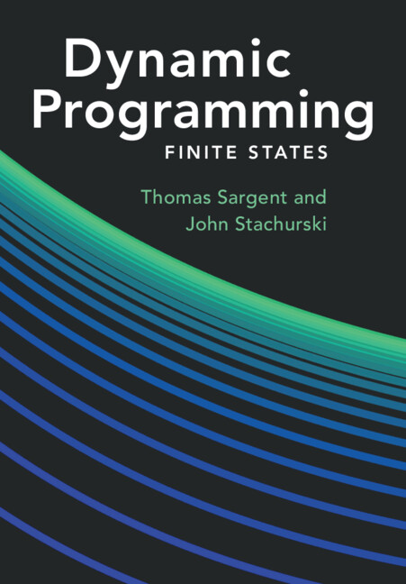

Dynamic Programming
These books offer a unified treatment of dynamic programming, from finite-state foundations to a complete reworking of the theory for general state spaces. Applications span economics, finance, and operations research.
Read & download
Online editions are searchable and include runnable code. PDFs remain available for offline use.
Volume II
Dynamic
Programming General States
Forthcoming
Programming General States
General States
Overview Lectures
High-level introduction covering both volumes.
Contents
Volume I — Finite States
- Introduction
- Operators and Fixed Points
- Markov Dynamics
- Optimal Stopping
- Markov Decision Processes
- Stochastic Discounting
- Valuation
- Recursive Decision Processes
- Abstract Dynamic Programming
- Continuous Time
Volume II — General States
- Prelude: Examples of Dynamic Programs
- Abstract Decision Processes
- ADPs on Pospace
- ADPs on Banach Space
- ADP Transformations
- Linear Decision Processes
- Recursive Decision Processes
- Additional Applications
- Approximation and Learning